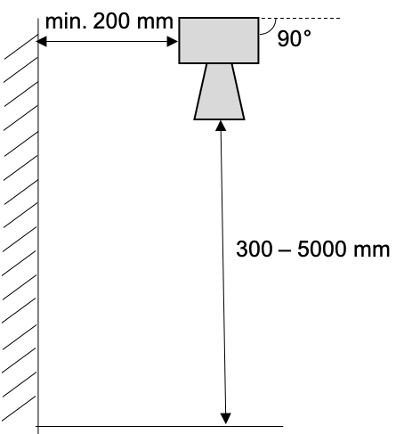
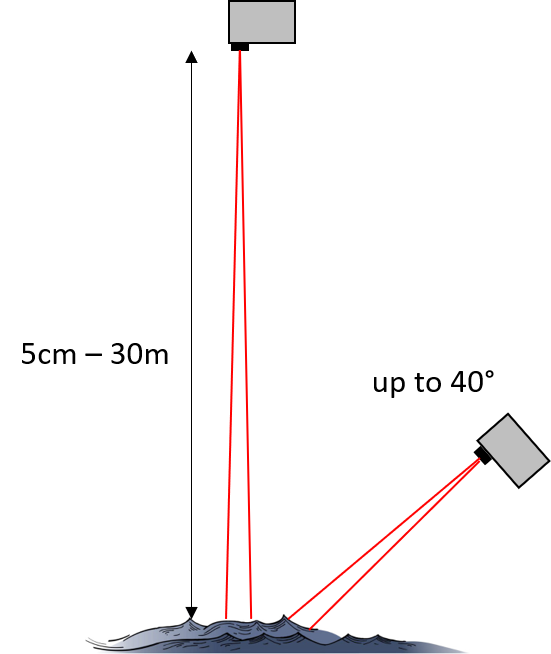

Sensor Positioning¶
Overview
Proper sensor positioning is critical for accurate measurements. This guide provides detailed information on optimal placement of the most common sensors deployed with the Wari platform.
Maxbotix Ultrasonic sensor¶
Installation¶
The ultrasound sensor emits a conical beam that spreads as distance increases. The specific pattern is described in the Maxbotix data sheet, and reaches a width of up to 60cm. Therefore, we recommend to keep at least 50 cm of distance between the centre of the flight path and any objects:

Reflectivity considerations¶
Ultrasound distance measurements measure the time of flight of a sound pulse that is emitted by the sensor and reflects on the target object. As different materials and object shapes may affect the reflectivity of the object, they may have an impact on the quality of the measurement. Water has generally a high reflectivity for sound, however, the following processes may influence the readings:
- Waves and turbulence: these will not affect the reflection itself, but the resulting variations in water level will affect the reading itself. Taking several measurements and averaging them may increase the accuracy
- Debris: Some types of debris such as soft materials may reduce the reflectivity of the target. Larger pieces of debris may also change the surface of reflection and induce a measurement error.
- Wind: may affect the water surface by creating waves, but strong wind may also result in pulses getting lost.
Garmin Lidarlite v3HP¶
Installation¶
The lidar sensor emits a highly focused infra-red laser beam with minimal divergence (8 milliradians or ~0.5°). This gives around the following diameter and area characteristics:
Distance vs. Spot Size:
| Distance | Spot Diameter | Area Coverage |
|---|---|---|
| 1 m | ~0.8 cm | 0.0005 m² |
| 5 m | ~4 cm | 0.0013 m² |
| 10 m | ~8 cm | 0.005 m² |
| 20 m | ~16 cm | 0.020 m² |
| 35 m | ~28 cm | 0.062 m² |
Because of the tight beam, a lidar sensor can also installed at an angle. This reduces the accuracy somewhat (see below) but can be a practical advantage, for example when vertical mounting is impossible, or prevented by concerns over access or safety. Our own tests have shown that angles up to 40° from vertical are feasible.

Angle Impact on Accuracy:
| Angle from Vertical | Accuracy Impact | Notes |
|---|---|---|
| 0°–10° | <0.5% error | Negligible correction |
| 10°–20° | <1% error | Recommended maximum |
| 20°–30° | <1.5% error | Acceptable with correction |
| 30°–40° | <2.5% error | Maximum recommended |
| >40° | >3% error | Not recommended |
When mounted at an angle, the measured distance will of course be different from the vertical distance, which is needed to convert the raw measurement into water depth. The vertical distance can be obtained with the following formula, in which the "angle" is the angle between the flight path and the vertical.
Example Calculation:
Sensor at 25° angle measures 10.5m
Vertical distance = 10.5m × cos(25°)
Vertical distance = 10.5m × 0.906
Vertical distance = 9.51m
Reflectivity considerations¶
The reflectivity properties of a lidar sensor are very different from those of an ultrasound sensor. In perfectly still conditions, pure water is highly transparent to infrared light, and reflects very little. This is different for a rough water surface, or the water contains sediment particles or other material that makes it less transparent. A rough water surface also disperses the lidar beam, which makes it more likely that the part of the signal returns to the lidar. This is particularly relevant for applications at an angle, where a perfectly smooth surface may reflect the signal away from the sensor (as a mirror would do).
Therefore, a lidar sensor will work best in open air conditions, where wind or streamflow creates a rough surface, or on water with some sediment or other content that increases the turbitity. The folowing table provides an overview:
| Good Conditions | Poor conditions |
|---|---|
| Slightly rough water surface | Perfectly clear, smooth water (mirror-like) |
| Turbid/sediment-laden water | Very clean water in calm conditions |
| Water with suspended particles | Highly transparent water |
| Foam or debris on surface | Dark water with no suspended material |
Next Steps¶
- 📐 Mounting Guide: Install your optimized sensor position
- 🌡️ Environmental Considerations: Site-specific factors
- 🔋 Battery & Power Guide: Power planning
- 🔧 Maintenance: Keep sensor positioned correctly